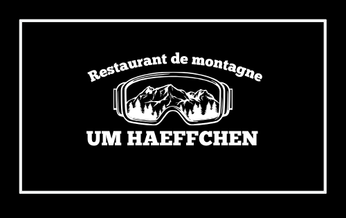

01
Fondue savoyarde
Le caquelon au centre, le pain au bout de la fourchette. Notre signature, un mélange de fromages de montagne fondu au vin blanc.
Signature · à partager
Um HaeffchenBeringen · Restaurant de montagneRaclette, fondue, pierrade, charbonnade. On allume le feu, on fait fondre le fromage, on grille à même la table — le vrai rituel du chalet, à vingt minutes de la ville.
Ici, le plat arrive cru ou fondant et c'est vous qui cuisinez, ensemble, au centre de la table. Le repas devient une soirée.
Le caquelon au centre, le pain au bout de la fourchette. Notre signature, un mélange de fromages de montagne fondu au vin blanc.
Signature · à partagerL'appareil sur la table, le fromage qui coule sur les pommes de terre, la charcuterie et les cornichons. Le classique réconfortant.
TraditionnelleBoeuf, veau, poulet et scampis à saisir sur la pierre chaude, à votre cuisson, avec un choix de sauces maison.
Pierre chaudeLe grill au charbon posé sur la table pour des viandes irlandaises et argentines grillées comme au refuge.
Au charbonLe fromage et la montagne d'un côté, le grill et les assiettes de l'autre. Options véganes sur demande.
Bois, lumière chaude, tables généreuses. Le décor d'un chalet savoyard planté dans la campagne de Mersch.
Um Haeffchen fait le pari simple d'emmener la montagne à Beringen. Poutres, boiseries et éclairage tamisé : on pousse la porte et on quitte le Luxembourg pour un refuge où le repas dure, où l'on partage le même caquelon et où personne n'est pressé.
« On ne vient pas seulement manger — on vient passer la soirée. »
C'est une maison pensée pour les tablées : familles de la région, groupes d'amis, anniversaires, banquets et fêtes. Une terrasse pour les beaux jours, une grande salle pour les grandes occasions.
« Une vraie soirée fondue comme à la montagne, généreuse et chaleureuse. On y retourne chaque hiver. »
Avis Google
« Le cadre chalet est parfait pour un groupe. La pierrade était excellente et le parfait, un délice. »
Avis RestaurantGuru
« Accueil chaleureux, portions généreuses, un bon plan pour une sortie conviviale hors de la ville. »
Avis TripAdvisor
Notes réelles et récentes ; extraits d'avis reformulés pour la démo.
À 36 rue d'Ettelbruck, commune de Mersch. Réservation vivement conseillée le week-end.
Midi sur réservation pour les groupes de 10+. Horaires & jour de fermeture à confirmer.